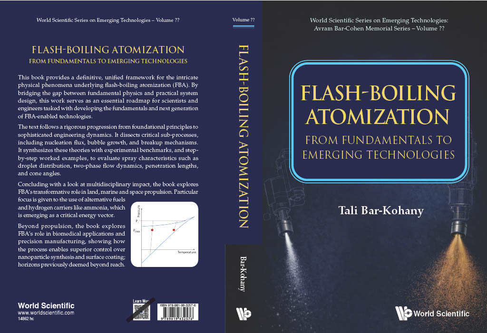

Advancing the Science of Metastable Liquids & Multiphase Flows
Welcome to my academic portal. My research investigates fundamental phase change phenomena at normal and trans/super-critical conditions, flash-boiling atomization, micro-scale thermal transport, and energy sustainability.
Prof. Tali Bar-Kohany
Tel Aviv University
Flash boiling atomization, spontaneous nucleation in multi-component mixtures, droplet micro-explosions, and energy sustainability.
Experimental Data & Visualizations
High-speed optical diagnostics, phase-transition plots, and multiscale thermal models.



Flash Boiling Atomization
From Fundamentals to Emerging Technologies
From bubble physics to advanced atomization technologies.
Research Areas & Publications
Explore core areas of thermodynamics, phase transitions, and peer-reviewed journal contributions.
Flash Boiling & Atomization
Investigating liquid-to-vapor phase transitions governed by random density fluctuations, spontaneous homogeneous/heterogeneous nucleation, and droplet micro-explosions.
Reactive & Multiphase Flows
Focusing on energy-related reactive flows, trans/super-critical conditions, combustion dynamics, and strategic alternative energy sources like methane-hydrates.
Microscale Thermal Transport
Analyzing boundary effects in multilayer heat conduction, microscale heaters, pool boiling nucleation, and advanced thermal management applications.
Predicting nucleation pressure under rapid depressurization: Bridging positive and negative pressure regions
Omry Magen, Yoram Kozak, Laura Di Lucchio, Marco Marengo, Tali Bar-Kohany
Bubble growth in composite water/fuel droplets: Effect on timing of their puffing/micro-explosion
Andrey A. Chernov, Dmitrii V. Antonov, Aleksandr N. Pavlenko, Tali Bar-Kohany, Pavel A. Strizhak, Sergei S. Sazhin
Heat transfer modeling during the readout process of a Thermoluminescent Dosimeter (TLD)
Tali Bar-Kohany, Ankur Jain
Methodology for Analyzing powder-based fire extinguishing and its optimization
Amir Shalel, David Katoshevski, Tali Bar-Kohany
Dissipation of boundary effects in multi-layer heat conduction problems
Tali Bar-Kohany, Ankur Jain
The effect of the radial heat loss, upper reservoir temperature, and corrugated wall channel on the flooding critical heat flux
Lior Nahon, Tali Bar-Kohany, Y. Aharon, E. Rabinovich, A. Biton, E. Gilad
Onset of heterogeneous nucleation in pool boiling of HFE-7100 following rapid heating on a microscale heater
Amiav Lankry, A. Koyfman, H. Haustein, Y. Nir, G. Ziskind, Tali Bar-Kohany
An experimental study of the events that follow a drop hitting a small surface
Merav Arogeti, Eran Sher, Tali Bar-Kohany
Bubble dynamics under negative pressures: A missing link?
O. Avni, Y. Dagan, Tali Bar-Kohany, Eran Sher
Advances in liquid atomization via flash boiling - A global overview
Tali Bar-Kohany, Merav Arogeti, Avihai Malka, Eran Sher
Nucleation and bubble growth during puffing and micro-explosions in composite droplets
Tali Bar-Kohany, Dmitrii V. Antonov, Pavel A. Strizhak, Sergei S. Sazhin
Approximations for the nucleation temperature of water
P. V. Skripov, Tali Bar-Kohany, Dmitrii V. Antonov, Pavel A. Strizhak, Sergei S. Sazhin
Flash boiling atomization triggered and driven by intensive radiation
O. Avni, Tali Bar-Kohany, Eran Sher
Flash boiling atomization under negative pressure conditions
Tali Bar-Kohany, Eran Sher
Minimal heating rate for isobaric nucleation at the spinodal in liquids
Tali Bar-Kohany
A new approach to modelling micro-explosions in composite droplets
Sergei S. Sazhin, Tali Bar-Kohany, Zuhaib Nissar, Dmitrii Antonov, Pavel A. Strizhak, Oyuna D. Rybdylova
Drop impact on small targets with different target-to-drop diameters ratio
Merav Arogeti, Eran Sher, Tali Bar-Kohany
Nucleation temperature under various heating rates
Tali Bar-Kohany, Yarden Amsalem
Flame propagation through three-phase methane-hydrate particles
Y. Dagan, Tali Bar-Kohany
A single drop impact on a flat, dry surface - A unified correlation
Merav Arogeti, Eran Sher, Tali Bar-Kohany
Transition Mechanism between combustion regions in swirling flow in downer reactors
Tal Eluk, Avi Levy, E. Korytnyi, Tali Bar-Kohany
State of the art review of flash boiling atomization
Tali Bar-Kohany, M. Levy
Transient combustion of a methane-hydrate sphere
Tali Bar-Kohany, W. A. Sirignano
Optimization of the temperature profiles due to a nitrogen jet impinging on a TLD detector
Idan Cohen, Tali Bar-Kohany, U. German, G. Ziskind
Another view of the upper and intermediate explosion limits of a H2-O2 system
Eran Sher, I. Sher, Tali Bar-Kohany
Evaluation of the one-step hydrogen-oxygen global reaction rate in a non-premixed mixture to predict auto-ignition limits
Tali Bar-Kohany, Kobi Dahan
Prediction of Container Hermeticity for Isostatic Pressuring Process
Tali Bar-Kohany, A. Stern
Thermal Behavior of a LiF Crystal Mounted in a TLD Card and Heated by Jet Impingement
Tali Bar-Kohany, Ravit Rozenfeld, M. Weinstein, A. Abraham, U. German, Z. B. Alfassi, G. Ziskind
Flash Boiling Atomization (Invited Review)
Eran Sher, Tali Bar-Kohany, A. Rashkovan
Choked Flow of a Two-Phase Mixture Through an Aperture: a Theoretical Approach
Tali Bar-Kohany, I. Sher, Eran Sher
Lifetime Estimation of MOEMS Devices
Tali Bar-Kohany, A. Stern
Effervescent Atomization Under Sub-sonic and Choked Conditions - a Theoretical Approach
Tali Bar-Kohany, Eran Sher
Subsonic Atomization Effervescent: a Theoretical Approach
Tali Bar-Kohany, Eran Sher
Optimization of Variable Valve Timing for Maximizing Performance of an Unthrottled SI Engine - a Theoretical Study
Tali Bar-Kohany, Eran Sher
Using the 2nd Law of Thermodynamics to Optimize Variable Valve Timing for Maximizing Torque in a Throttled SI Engine
Tali Bar-Kohany, Eran Sher
About Prof. Tali Bar-Kohany
Academic journey, leadership in thermal engineering, international fellowships, and educational background.
Academic Profile & Vision
Prof. Tali Bar-Kohany is an affiliated faculty member in the School of Mechanical Engineering at Tel Aviv University (TAU) and a Senior Researcher at the Nuclear Research Center of the Negev (NRCN). Her research explores the complex challenges of energy sustainability, reactive and multiphase flows, and high-speed thermodynamics.
Her expertise focuses on fundamentals of phase change processes at normal and trans/super-critical conditions spanning millisecond to nanosecond timescales. She also investigates unconventional alternative energy resources such as methane-hydrates found in permafrost and continental shelves.
International Sabbaticals & Collaboration
-
University of Maryland, College Park (2017–2018): Visiting Faculty collaborating with Prof. Jungho Kim on fundamental aspects of liquid-vapor phase change.
-
University of California, Irvine (2013–2014): Visiting Faculty collaborating with Prof. W.A. Sirignano on combustion of methane-hydrates.
Education & Appointments
Professor
School of Mechanical Engineering, Tel Aviv University
Senior Researcher
NRCN
Ph.D. in Mechanical Engineering
Ben-Gurion University of the Negev (BGU)
M.Sc. in Mechanical Engineering
Ben-Gurion University (Wolf Award for Master Excellence)
B.Sc. with Honors
Ben-Gurion University of the Negev
Honors & Recognitions
- Honorary Fellowship (2010): Australian Institute of High Energetic Materials
- Kazir Scholarship (2004): Ministry of Defense Research Grant
- Wolf Award (2000): Outstanding Master Degree Achievements
Research Students & Advisees
Graduate researchers and projects advised across Tel Aviv University and Ben-Gurion University of the Negev.
Tomer Lozano
An Experimental Study on the Effects of Size and Heating Rate on Critical Heat Flux.
Omry Magen
Rapid phase-change of hydrogen and hydrogen carrier fuels (HFCs) - RaPhys.
Doron Biton
Experimental study of the critical heat flux temperature due to rapid isobaric heating.
Yogev Elfasi
Effect of wall-liquid intermolecular forces on nucleation in a rapid isobaric heating.
Amiav Lankry
Nucleation inception temperature in boiling due to rapid heating under various thermodynamic conditions.
Amir Shalel
Optimization of extinguishing powder dispersal.
Lior Nahon
Countercurrent limited critical heat flux with heat transfer to the wall.
Yarden Amsalem
Cubic Equations of State and nucleation inception in boiling due to rapid heating.
Yaniv Levin
Modelling and simulating Ozonation of Lignocellulosic Biomass.
Tal Eluk
Two-phase reactive flow; CFD-DPM model of combustion process in a co-current gas-solid reactor.
Naor Hayun
Temperature profile control as a tool to improve chemical reaction in gas-particle downer.
Idan Cohen
Study of the thermal behavior of a thermo-luminescence detector (TLD) due to gas heating.
Kobi Dahan
Gas leakage and flammability into enclosures.
Ravit Rozenfeld
Study of the thermal behavior of a thermo-luminescence detector (TLD) due to gas heating.
Contact & Office Location
Inquiries regarding graduate student supervision, academic collaborations, or research publications.